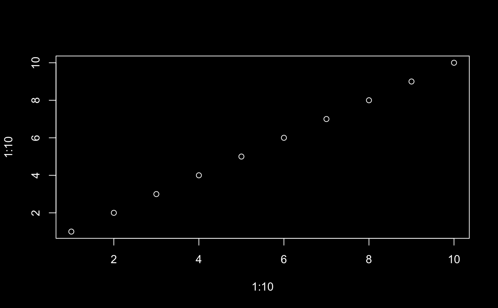

Auto theming defaults are used to resolve "auto" values outside
of a shiny runtime (i.e., where auto theming might be based on
imperfect heuristics). Setting of auto defaults is especially useful
for developers of a custom rmarkdown output document that wish to
have more sensible auto theming behavior for users of the document.
In particular, by having the output document call auto_defaults()
"pre-knit" with the document's styling preferences (and restoring the
old defaults "post-knit"), users of the output document can then simply
call thematic_on() within their document to use those preferences.
auto_defaults(bg = NULL, fg = NULL, accent = NULL, font = NULL)
| bg | a background color. |
|---|---|
| fg | a foreground color. |
| accent | a color for making certain graphical markers 'stand out'
(e.g., the fitted line color for |
| font | a |
Call this function with no arguments to get the current auto defaults.
#> Warning: thematic was unable to resolve `accent='auto'`. Try providing an actual color (or `NA`) to the `accent` argument of `thematic_on()`. By the way, 'auto' is only officially supported in `shiny::renderPlot()`, some rmarkdown scenarios (specifically, `html_document()` with `theme!=NULL`), in RStudio, or if `auto_defaults()` is set.